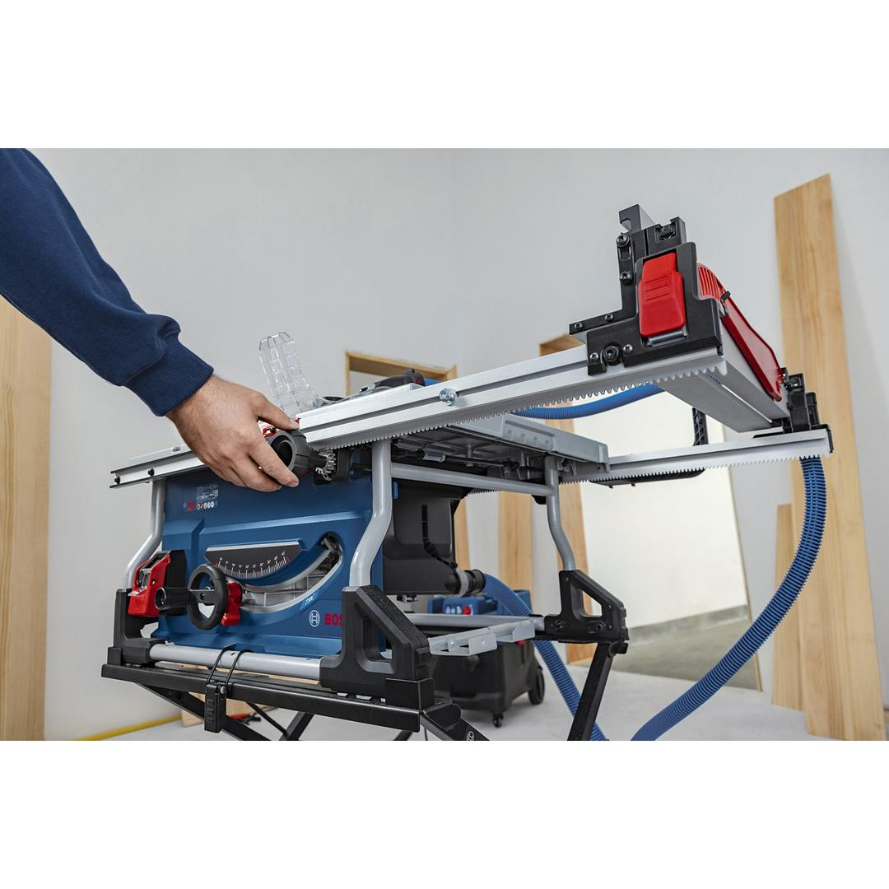
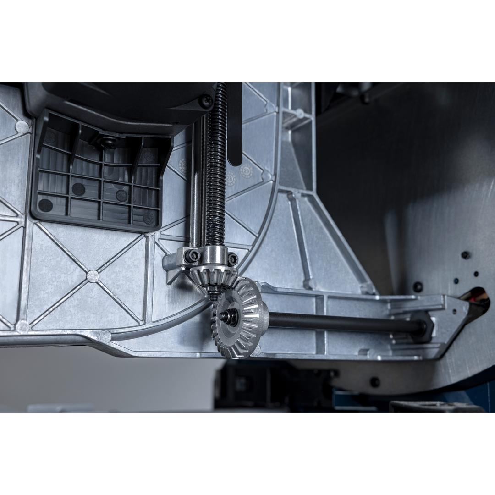
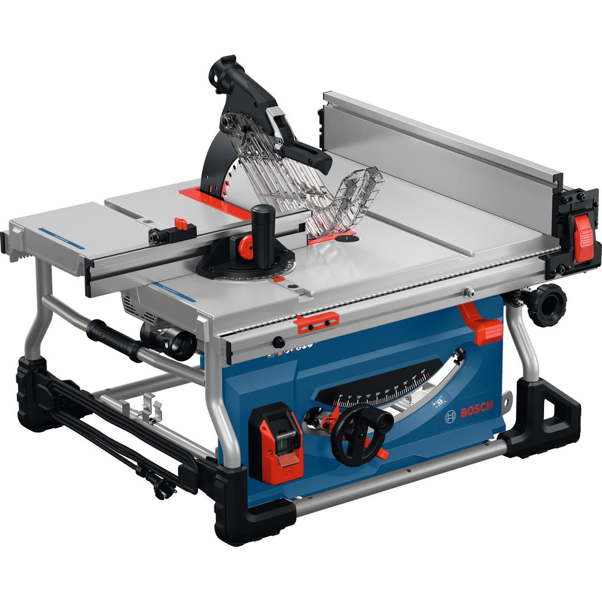

0601B307K0



| Noise level |
The A-rated noise level of the power tool is typically as follows: Sound pressure level 93 dB(A); Sound power level 105 dB(A). Uncertainty K= 3 dB. |
| Rated input power |
2,200 W |
| No-load speed |
4,500 rpm |
| Saw blade diameter |
254 mm |
| Saw blade bore diameter |
30.0 mm |
| Weight |
28.700 kg |
| Table size |
713 x 579 mm |
| Tool dimensions (width x length x height) |
694 x 713 x 363 mm |
| Cutting height 90° |
100 mm |
| Cutting height 45° |
68 mm |
| Incline setting |
47 ° L / -2 ° R |
Best-in-class cutting-height table saw for precise and long cuts
Cabinet installers, carpenters, and framers often struggle to maintain accuracy over extended rip cuts. The PRO HEAVY DUTY GTS100-254 table saw delivers unmatched performance with a best-in-class 2200 W power and a cutting height of 100 mm, eliminating the need to flip over your workpiece to reduce time and effort. Its convenient rack-and-pinion fence ensures rip cuts up to 825 mm are precise and effortless. Designed for workplace safety and comfort, it features two dust ports compatible with Click & Clean systems, unique clamp zones, featherboard compatibility in the rip fence as well as soft start and a fast brake system for increased protection. You’ll achieve precise, toolless bevel undercuts from 0° to -2° and 45° to 47°, with an intuitive automatic reset to standard 0° and 45° angles—perfect for efficient operation.
The PRO HEAVY DUTY GTS100-254 table saw delivers unmatched performance for precise, long cuts in wood.